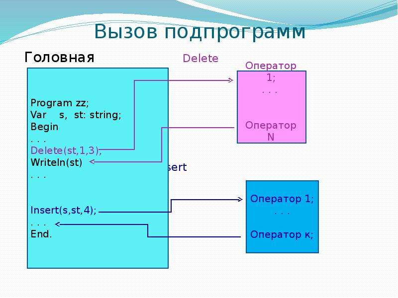

Функция в программировании, или подпрограмма — фрагмент программного кода, к которому можно обратиться из другого места программы. В большинстве случаев с функцией связывается идентификатор], но многие языки допускают и безымянные функции. С именем функции неразрывно связан адрес первой инструкции (оператора), входящей в функцию, которой передаётся управление при обращении к функции. После выполнения функции управление возвращается обратно в адрес возврата — точку программы, где данная функция была вызвана.

Функция может принимать параметры и должна возвращать некоторое значение, возможно пустое. Функции, которые возвращают пустое значение, часто называют процедурами. В некоторых языках программирования объявления функций и процедур имеют различный синтаксис, в частности, могут использоваться различные ключевые слова.

Функция должна быть соответствующим образом объявлена и определена. Объявление функции, кроме имени, содержит список имён и типов передаваемых параметров (или: аргументов), а также, тип возвращаемого функцией значения. Определение функции содержит исполняемый код функции. В одних языках программирования объявление функции непосредственно предваряет определение функции, в то время как в ряде других языков необходимо сначала объявить функцию, а уже потом привести её определение.
В объектно-ориентированном программировании функции, объявления которых являются неотъемлемой частью определения класса, называются методами. Также в языках с ООП возможно объявление абстрактной (виртуальной) функции без объявления тела функции.
Для того, чтобы использовать ранее определённую функцию, необходимо в требуемом месте программного кода указать имя функции и перечислить передаваемые в функцию параметры. Параметры, которые передаются функции, могут передаваться как по значению, так и по ссылке: для переменной, переданной по значению создаётся локальная копия и любые изменения, которые происходят в теле функции с переданной переменной, на самом деле, происходят с локальной копией и никак не сказываются на самой переменной, в то время как изменения, которые происходят в теле функции с переменной, переданной по ссылке, происходят с самой переданной переменной.
Функция определяет собственную (локальную) область видимости, куда входят входные параметры, а также те переменные, которые объявляются непосредственно в теле самой функции.
Существует возможность вызвать функцию внутри самой функции: такой вызов функции называется рекурсивным, а сам процесс последовательных вложенных друг в друга вызовов функций называют рекурсией. Поскольку необходимо запомнить (в стеке) адрес возврата функции (а также, выделить в том же стеке память под параметры и локальные переменные, не являющиеся динамическими), то ничем не ограниченная рекурсия приводит к переполнению стека, поэтому в языках программирования устанавливается некоторый предельный уровень вложенности рекурсивных вызовов.